To provide a simple visualization of potential batch
effects, plot_batch generates a Tukey
box plot overlaid by a jittered
dot plot, inspired by the Stata plugin stripplot.
Boxes span from the 1st to the 3rd quartile; thick lines indicate medians; whiskers span up to 1.5 times the interquartile range; and asterisks indicate means.
plot_batch(
data,
marker,
batch,
color = NULL,
maxlevels = 15,
title = NULL,
...
)| data | Dataset. |
|---|---|
| marker | Variable indicating the biomarker. |
| batch | Variable indicating the batch. |
| color | Optional: third variable to use for symbol
color and shape. For example, |
| maxlevels | Optional: Maximum number of
levels for |
| title | Optional: character string that specifies plot title |
| ... | Optional: Passed on to |
ggplot2 object, which can be further modified using standard ggplot2 functions. See examples.
Cox NJ (2003). STRIPPLOT: Stata module for strip plots (one-way dot plots). Statistical Software Components S433401, Boston College Department of Economics, revised 11 Oct 2020.
Manimaran S, Selby HM, Okrah K, Ruberman C, Leek JT, Quackenbush J, Haibe-Kains B, Bravo HC, Johnson WE (2016). BatchQC: interactive software for evaluating sample and batch effects in genomic data. Bioinformatics. doi:10.1093/bioinformatics/btw538
More powerful visualizations of batch effects exist in the BatchQC package:
https://doi.org/10.1093/bioinformatics/btw538
http://bioconductor.org/packages/release/bioc/html/BatchQC.html
# Define example data
df <- data.frame(
tma = rep(1:2, times = 10),
biomarker = rep(1:2, times = 10) +
runif(max = 5, n = 20),
confounder = rep(0:1, times = 10) +
runif(max = 10, n = 20)
)
# Visualize batch effects:
plot_batch(
data = df,
marker = biomarker,
batch = tma,
color = confounder
)

# Label y-axis, changing graph like other ggplots:
plot_batch(
data = df,
marker = biomarker,
batch = tma,
color = confounder
) +
ggplot2::labs(y = "Biomarker (variable 'noisy')")
